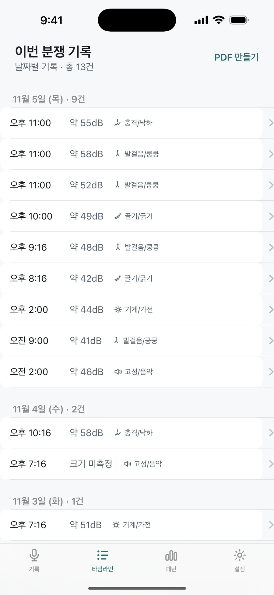

흩어진 소음 기록
날짜별로 모아요
소음이 들릴 때마다 기록하고 상황별로 정리하는 기록장이에요
App Store에서 받기1탭한 번의 터치로 기록
5소음 유형 분류하기
PDF문서로 바로 만들기

소음이 들릴 때마다 기록하고 상황별로 정리하는 기록장이에요
App Store에서 받기소음이 들릴 때 버튼을 눌러 상황을 담아요
날짜별로 쌓이는 기록을 한눈에 확인해요

시간대와 요일별 빈도를 차트로 요약해요

정리된 기록을 PDF로 내려받아 활용해요

복잡한 과정 없이 버튼 하나로 기록을 시작해요
날짜별로 모인 기록이 상황을 명확히 보여줘요
필요한 기간에 맞춰 정리된 문서를 만들 수 있어요